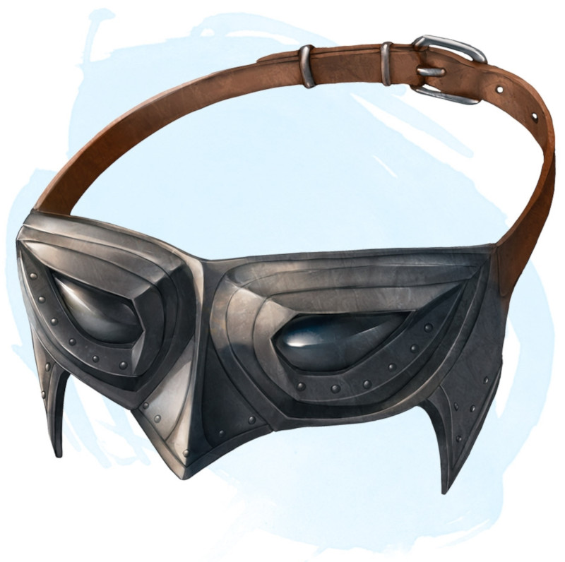

Yeux de lynx
Objet merveilleux, peu commun (nécessite un lien)
Ces lentilles de cristal se placent sur les yeux. Tant que vous en êtes équipé, vous avez un avantage aux jets de Sagesse (Perception) basés sur la vue. Dans des conditions de bonne visibilité, vous pouvez même apercevoir les détails de créatures et d'objets extrêmement éloignés, comme s'ils étaient situés à 60 centimètres de vous.
Dungeon Master´s Guide (SRD)
